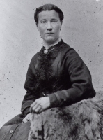
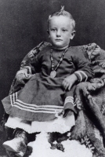
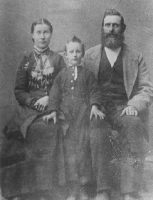

GEORGE WASHINGTON SEVEY, JR. (1832-1902)
(Source: The George Francis Sevey Family Book of Remembrance, compiled by Eileen Sevey Cluff)
 Introduction
Introduction
George Washington Sevy, Jr. was born February 25, 1832, in Leroy, Genesee County, New York, to George Washington Sevey and Hannah Libby. As a grown man, he stood about five feet eleven inches tall, of medium build, leaning a little toward the slender side. He had blue eyes, a heavy shock of dark hair, with a rather swarthy complexion and a luxurious beard, rounded just a mite on the end. Many people described him as a handsome man, but whether or not he was, he did have a magnetic personality; he had many friends, and was a friend in return.
It might be well to mention a few of the many vocations and avocations at which he was indeed successful. Although he had had only about six months of actual formal schooling, he seemed to have been a college graduate. His writing was truly legible and his leadership qualifications were outstanding. He was good at making brooms, shoes, farming, stock raising (cattle, sheep, pigs, horses, and chickens), freighting, mining, peddling, merchandising, operating harvest machinery, building dams, canals, roads, land promoting, saw milling, threshing, railroad grading, constructing reservoirs, dairying and he had the magical green thumb-anything he planted grew. He was a master woodsman�few men could compete with him and his axe. He was a person of the highest moral character; his every act was directed toward the inner circle of his prescribed ethical and religious standards.
He emigrated to the west in a company of gold-seekers enroute to California, arriving in Utah about 1849. He then procured a job, intending to work until winter was over, then proceed on to the coast. However, he took up with the Mormons and remained with them, going from Salt Lake City, to Spanish Fork.
"A miracle converted me," confessed Bishop Sevy in one of his rare sermon ventures, "but it has not taken a miracle to keep me converted. The testimony it left with me is my choicest possession and burns ever brighter as the days pass.
"I left my home to take part in the gold rush to California in �49. Had my job as teamster for a party of goldseekers held out, I would probably be there today among the discouraged and abandoned miners that fill the state. But the Lord intervened in a way that was hard to take at the time. I fell so sick that I could not continue with my party, nor could they wait for me to get well. They left me at a wayside camp, and pushed on without me. I probably would have died, but a following party picked me up and carried me with them to Utah."
Stranded Among the Mormons!
"Before reaching Salt Lake City, I had heard much of the Mormons, but nothing favorable, so naturally I was determined not to tarry among them. But being left stranded in Salt Lake City by the second party, I had no choice. I accepted work from one good Mormon brother who needed some teams taken to Palmyra where a group of Saints were struggling to begin a new community. While waiting for a chance to return, I took board and lodgings with a good sister who taught me the Gospel by the way she lived it. Under her influence my steeled heart softened, and favorable impressions of the Mormons and their teachings crept in, despite my resolves�though you may be sure I took elaborate care to let no one know of it.
"One night I went with them to a cottage meeting, more to please the good lady than because I was interested, and feeling sure my prejudice against the Mormons would never let them �get me.� I listened to the talks indifferently, passive and undisturbed until one brother arose, took my attention, just as Patriarch Holt took it and yours a few Sundays ago, by speaking in tongues, a strange language. The peculiar thing about it was that I understood him. I knew from the very beginning that he was speaking to me and telling me in a language that no one else seemed to understand, that I must not deny the voice trying to speak to me, nor be deaf to what it was trying to say. The plan of salvation was being shown to me, he said, and a way was being opened for me to accept it, and if I did I would be the means of taking the Gospel to my mother and be a savior to her.
"The idea shook me, and left my so disturbed I was not aware of his closing. Not until the hush and quiet that followed could no longer be ignored. Then I came to with a start. The brother was asking who in the room had the interpretation to the sermon in tongues I had listened to. I was amazed that no one answered. I was sure they must know what I knew and that they were keeping still just to see what I�d do.
"When he pointedly asked me if I didn�t have the interpretation I kept still, too, shaking my head vigorously, as much to convince myself that I had not understood as to deny I had. When the meeting broke up without any interpretation being given, I left the meeting feeling that every eye was boring me in the back, and that they were all wondering why I had denied something I knew to be true. The uncomfortable remembrance of it kept me awake that night, and tossing me about in my bed as I tried to make up my mind what to do. Not until I�d acknowledged the testimony and firm conviction that had come to me did I find rest. Then I went to sleep so soundly that I did not waken until the noise of the family assembling for breakfast awoke me.
"I then satisfied my conscience by a confession I had formulated during the night, and my heart rejoiced with the spirit of peace therein, and for the conviction that my search was over, that the thing for which I had left my home had been found, and that it was something far more precious than the gold I started out to find.
"I fulfilled the promise made to me and became the savior of my mother�s soul. She followed met to Utah, with Lem Redd�s wagon hauling her from the Mississippi River to my home in Panguitch. She was living with me when she died, a firm believer in the principles of the Gospel I had explained to her. She was a happy recipient of the ordinances that insured her salvation in the worlds to come. Amen."
From that day on George made a careful and prayerful study of the Mormon teachings, and became a baptized member and a sincere follower of the doctrines, being baptized by Stephen Markham on May 3, 1853.
Settling Southern Utah
Among the Mormon young people with whom he associated, was the lovely brown-eyed Phoebe Melinda Butler, whom George courted. They were married on December 5, 1854, and began their life together in the frontier settlement of Spanish Fork, Utah. It was the beginning of a fruitful life for this young pioneer couple. For a time they lived on the river, south of Spanish Fork. They built a footbridge across the river, and nailed standards to the bridge, then wove willows, to keep the children from falling in the river.
In 1861, he was called on a mission to southern Utah and was among the first settlers of New Harmony. The town was built about four miles west of old Fort Harmony in Washington County. Their outfit was a large schooner wagon, the same as those used in crossing the plains. At New Harmony, they lived in a tent for some time, then they built a log cabin and moved into it. Soon, however, they made adobes and built a three-room house. It was not long before they had a few sheep and cows. Feed was plentiful and livestock did well. The following year, 1862, he cleared the land and planted a garden, producing most of what they had to eat.
Before leaving Spanish Fork, they had four children, one girl and three boys, one of whom died young. These were Hannah Caroline, George W. (deceased), John Lowe, and James William. While in New Harmony they added six more to the family: Joseph and Hyrum (twins who both died as babies), Ruben Warren, Georgiana, Thomas, Phoebe Melinda.
On August 29, 1868, George had entered into his first plural marriage by taking as his second wife, Margaret Nebraska Imlay, a daughter of James Havens Imlay and Anna Eliza Coward. Just two and a half years later he took his two wives and his family, and went to resettle Panguitch in answer to a call from President Brigham Young.
Within two years the community had grown until nearly 200 families had established homes there. George presided as Bishop for nine years, and when the Panguitch Stake was organized in April 1877, he was chosen first counselor to the Stake President, James Henrie, while at the same time he continued in his position as bishop.
A meetinghouse was erected of brick. Many industries were started and the community boasted of many tradesmen. In 1875, he went with others to Potato Valley and assisted in settling what is now the flourishing town of Escalante.
On December 18, 1877, he married a second plural wife, Martha Ann Thomas of Pine Valley, Utah, a daughter of John Pledger Thomas and Mahala Matthews. Then in the next year he participated in the expedition to San Juan County, in southeastern Utah, and helped open that country for settlement, building a raft to cross the Colorado River on the celebrated "Hole-in-the-Rock" Expedition. He was one of four men who in December of 1878 explored that country for a wagon road from the crossing of the Colorado to the side of the city of Bluff on the San Juan River.
In Panguitch, he had several more children. Phoebe gave him Sarah Adeline (died in her 18th year), Martha Jane, Mary May (died in her 3rd year), and Pearl. Margaret, his second wife, gave him Maggie Mariah, Abraham, Isaac (all three died as infants), and George Francis. His third wife, Martha Ann, gave him Hannah Mahala, George Thomas, and Lemuel Hardeson.
Escape to Mexico
In 1885, he moved to Mexico with his plural wives to escape persecution for these polygamous marriages. He helped to build Colonia Juarez and was its first Bishop, presiding for 12 years. He helped with the building of the telegraph line. He established several businesses and was financially interested in most of the industries started in the colonies, including mining. He helped lay out and build roads into the Sierra Madre Mountains and locate the towns of Corralles and Pacheco.
George felt heartbreak and pain when he heard of the death of his first wife, Phoebe. She had contracted cholera morbus, a particularly bad type of dysentery, and had passed away rather suddenly on August 14, 1892, in Panguitch. It was impossible for him to make the long journey back to Panguitch before her burial, so she was laid away without his having seen her for several years. Her work was done now, and her reward won. He was happy for her, but he knew he would feel a pain whenever he thought of her and realized all over again that she would no longer be there waiting for him.

After moving to Mexico, Maggie (his second wife), gave him two more children: Minerva Elizabeth, and Phoebe Vilate. Martha Ann was the mother of five more: William Exile, Nelle Jane, Moses Thatcher, Martha Ann, and Lola Myrl. Then in 1895, Maggie had another child, Leon Lorenzo, and although she was happy with her new baby, her health was failing and she was not able to work as she had always done. When it was known for certain that she was suffering with cancer, George prepared to take her back to Utah to a doctor there, hoping to get some relief for Maggie. They took the baby with them, and George made the miles count the best he could. They were just a few miles from their destination, Loa, in Wayne County, when Maggie passed away. George went immediately to Panguitch, and there laid her to rest in the cemetery near his first wife, Phoebe, who had gone on some five years previous.
On his return to Mexico, he moved Martha Ann out to the farm. She had borne him another little girl in 1896, and moving out to the farm with her family, now complete with little Una Bernetta, meant she would have to care for all Maggie�s children, as well as take up the chores there. George enlarged their house, for it was not large enough to accommodate all the family. With the larger house, he knew Martha would manage the job of mothering them all like an expert, and so she did.
George again became fired up with the spirit of accomplishment. He felt that he must get busy while he was still able, and get things in order. He couldn�t spend his time living in the past, so new projects quickly started forming in his mind. But the work he cut out for himself was too strenuous for a man of his years and he tired easily. He had frequent spells of illness and he had to turn the job of driving his teams over to his son, George Thomas.
From the mountain country where he had been working, he returned to Colonia Juarez to rest up and hoped to get feeling a little stronger. He soon became restless and went back up to Colonia Chuichupa to see how things were getting on, arriving tired and ill and in such a state that Tom had to bring him back home. His heart was failing and he suffered terribly with diabetes.
It was disheartening to see him, a man so full of the desire to work and build, and who had made such great strides in life and living, lying there so tired and still, the strength of his body being steadily drawn from him. He called his family to his bedside and talked to each of them of the things that were most dear to him. It had ever been his greatest pleasure to bear his testimony of the Gospel, and he would in his good-natured way, conclude, "It took a miracle to convert me, but it hasn�t taken others to keep me converted."
Finally on June 22, 1902, after a very full and complete life, he passed away at his home in Colonia Juarez, and was buried there the next day. Years later, Martha Ann was laid by his side, thus closing the book on the life of George Washington Sevy. He was married three times, and was the father of 30 children.
GEORGE WASHINGTON SEVEY, JR. (1832-1902)
�I left my home and mother to hire out as teamster to a party of gold seekers headed for California. I fell so sick that I could not continue with my party, nor could they wait for me to get well. They left me at a wayside camp, and pushed on without me. I probably would have died, but a following party picked me up and carried me with them to Utah.
�Before reaching Salt Lake City, I had heard much of the Mormons, but nothing favorable, so naturally I was determined not to tarry among them. But being left stranded in SLC by the second party, I had no choice. I accepted work from one good Mormon brother who needed some teams taken to Palmyra where a group of Saints were struggling to begin a new community. While waiting for a chance to return, I took board and lodgings with a good sister who taught me the gospel by the way she lived it. Under her influence my steeled heart softened, and favorable impressions of the Mormons and their teachings crept in, despite my resolves, though you may be sure I took elaborate care to let no one know of it.
�One night I went with them to a cottage meeting, more to please the good lady than because I was interested, and feeling sure my prejudice against the Mormons would never let them �get me�. I listened to the talks indifferently, passive and undisturbed until one brother arose, took my attention, by speaking in tongues, a strange language. The peculiar thing about it was that I understood him. I knew from the very start that he was speaking to me and telling me in a language that no one else seemed to understand, that I must not deny the voice trying to speak to me, not be deaf to what it was trying to say. The plan of salvation was being shown to me, he said, and a way was being opened for me to accept it, and if I did I would be the means of taking the gospel to my widowed mother and be a savior to her. The idea shook me, and left me so disturbed I was not aware of his closing. Not until the hush and quiet that followed could no longer be ignored. Then I came to with a start. The brother was asking who in the room knew the interpretation to the sermon in tongues I had listened to. I was amazed that no one answered. I was sure they mush know what I knew and that they were keeping still just to see what I�d do. When he pointedly asked me if I didn�t have the interpretation I kept still, too, shaking my head vigorously, as much to convince myself that I had not understood as to deny I had. When the meeting broke up without any interpretation being given, I left the meeting feeling that every eye was boring me in the back, and that they were all wondering why I had denied something I knew to be true. The uncomfortable remembrance of it kept me awake that night, and tossed me about in my bed as I tried to make up my mind what to do. And not until I�d acknowledged the testimony and firm conviction that had come to me did I find rest. Then I went to sleep so soundly that I did not waken until the noise of the family assembling for breakfast awoke me.
�I then satisfied my conscience by a confession I had formulated during the night, and my heart rejoiced with the spirit of peace therein, and for the conviction that my search was over, that the thing for which I had left my home had been found, and that it was something far more precious that the gold I started out to find.
�I fulfilled the promise made to me and became the savior of my mother�s soul. She followed me to Utah, with Lem Redd�s wagon hauling her from the Mississippi River to my home in Panguitch. She was living with me when she died, a firm believer in the principles of the Gospel I had explained to her. She was a happy recipient of the ordinances that insured her salvation in the worlds to come. Amen.�
For more go to:
George W. Sevey Album